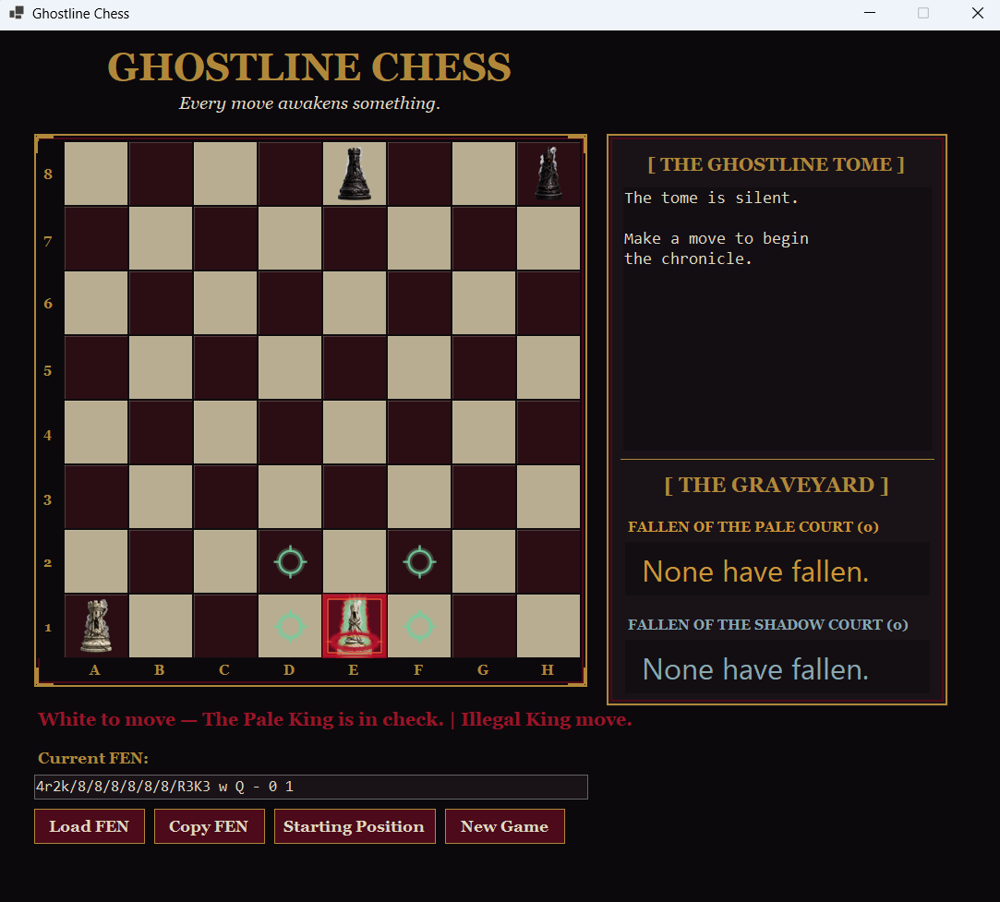
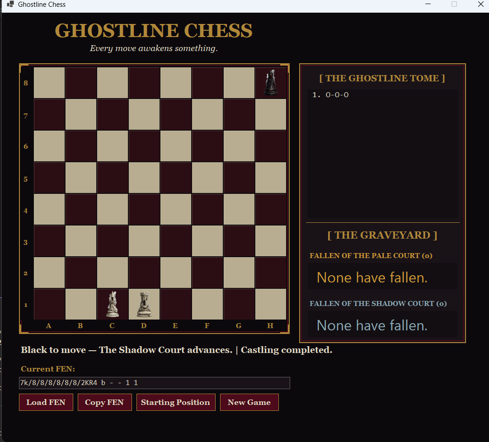
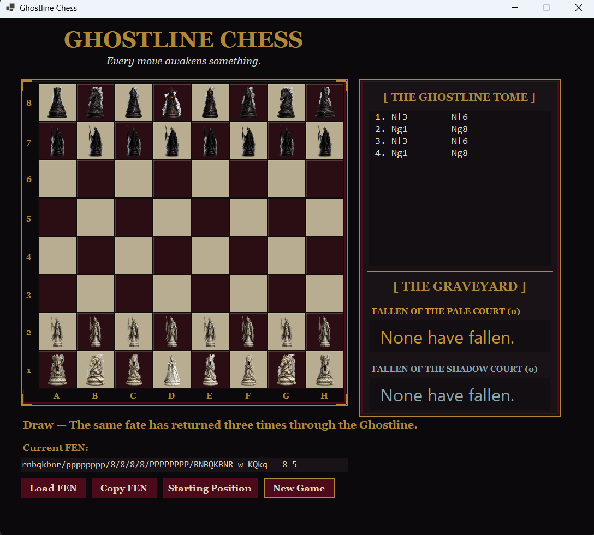

Local Competition
The Hallowed Saints and Damned Souls take turns on one computer through a complete local chess match.
A Haunted Echoes Studios Project
The Hallowed Saints and Damned Souls battle across a gothic board where every move is recorded in the Ghostline Tome and every fallen piece enters the Graveyard.
The newest development milestone combines a validated chess engine, complete special-move and draw rules, FEN tools, custom horror artwork, and a layered audio system built for Haunted Echoes Studios.

Game Overview
Custom court artwork, spectral move indicators, themed status messages, full game-state tracking, and layered sound give the traditional match a distinct Haunted Echoes identity.
The Hallowed Saints and Damned Souls take turns on one computer through a complete local chess match.
The engine validates king safety, castling, en passant, promotion, check, checkmate, and every standard piece movement rule.
The Ghostline Tome records algebraic notation, the Graveyard tracks captures, and FEN tools preserve or restore board positions.
Core Features
The v7 development build now keeps its background atmosphere playing beneath environmental, movement, capture, and game-state effects. Individual cues will be reviewed track by track before the next release.
Current Development Screenshots
These images show the updated board, special moves, check warning, and completed draw-rule validation.

The checked king receives a crimson aura and the status banner preserves the warning after an illegal escape.

The king and rook move together, the Tome records O-O-O, and the updated FEN removes the castling right.

The engine tracks repeated positions independently of FEN move counters and locks play after the third occurrence.
Version 1.0.0 remains available as the original packaged Windows release. The gothic interface shown above is the newer development source milestone.
Installation
Use the release button to download the Windows x64 package from GitHub.
Open the downloaded ZIP file and extract its contents into a normal folder.
Open the extracted folder and run the Ghostline Chess application executable.
Two players can take turns on the same computer using the game interface.
Project Resources
Download the packaged Windows x64 version of Ghostline Chess.
Download Version 1.0.0Review the project repository, files, history, and implementation on GitHub.
View Source CodeReview the version 1.0.0 release information and downloadable package details.
View Release NotesRelease Requirements
The current downloadable package is distributed as a 64-bit Windows release.
Development Background
Ghostline Chess now demonstrates layered game logic, visual theming, custom assets, systematic rule testing, source control, and Windows desktop development with C# and .NET 10.
Its completed rule-validation milestone establishes a stable foundation for audiovisual polish and for future Haunted Echoes Studios projects built in Unity.
Represent the board, pieces, turns, and movement behavior in code.
Translate player selections into validated game actions.
Reflect moves, captures, turns, and game-state changes visually.
Prepare the completed application for download through GitHub Releases.

Haunted Echoes Studios
Haunted Echoes Studios develops original interactive projects involving mystery, folklore, horror, history, simulation, and meaningful player choices.
Ghostline Chess is the studio’s active playable development project and strengthens the technical foundation for larger original horror and mystery concepts now moving through planning and Unity prototyping.
Visit Haunted Echoes Studios Explore Ghostline LabsGhostline Chess
Ghostline Chess version 1.0.0 is available as a packaged Windows x64 download with public source code and release information.